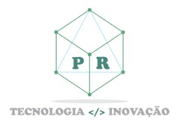

<p>
    <mat-toolbar color="primary" style="height: auto;">
      <span class="card__img">
        
      </span>
      <span>Ferramentas Online</span>
      <span>
        <button mat-icon-button class="example-icon" aria-label="Menu Icone">
          <mat-icon>menu</mat-icon>
        </button>  
      </span>
    </mat-toolbar>
  </p>